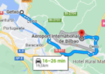

8h Petit-déjeuner léger à l'hôtel puis churros et café en face !
9h30 Check out hôtel
matin Tiendastherapy
midi Marché de la Ribera
ou matin + midi Excursion Getxo, Portugalete et le bord de mer à moins d'une heure de route :

13h Sortie parking direction aéroport (trajet 30 min)
14h05 Enregistrement valises
15h Go to gate
16h05 Décollage
17h40 Arrivée GVA
19h30 C'est fini !